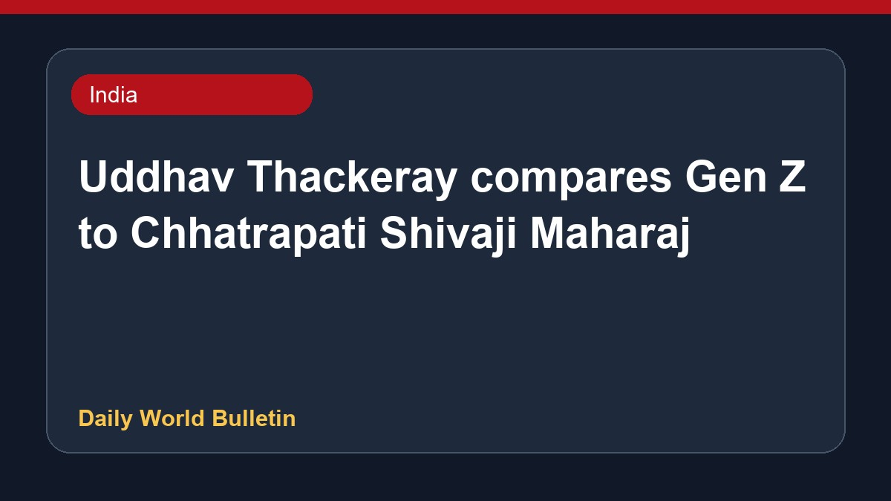

Uddhav Thackeray compares Gen Z to Chhatrapati Shivaji Maharaj

Shiv Sena (UBT) leader Uddhav Thackeray has drawn a parallel between today's Gen Z protesters and Chhatrapati Shivaji Maharaj. He remarked that just as the Mughals once derogatory referred to the Maratha warrior as a rat, contemporary youth are similarly being dismissed by authorities. Thackeray made these comments while supporting demonstrations, including those related to the NEET paper leak protests, and criticized the legal notices and FIRs issued against the participants. He praised activist Abhijeet Dipke and emphasized that such democratic protests help revive the nation's democratic values.
Original source: India News Sources
'Even Mughals called Shivaji a chuha': Uddhav likens Gen Z to Maratha warrior - The Times of India ↗
'Even Mughals called Shivaji a chuha': Uddhav likens Gen Z to Maratha warrior - The Times of India ↗